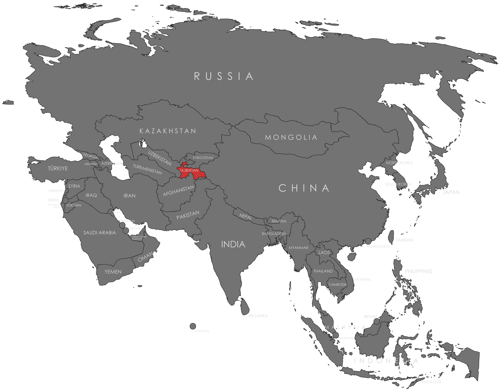

Specifications
- Local Name: Тоҷикистон (Tojikiston)
- Proportion: 1:2
- Name of the Flag: Парчами Тоҷикистон (Parcham-i Tojikiston)
- Adopted: November 24, 1992
Symbolism
- Red: Unity of the nation and victory
- White: Purity, morality, and the snow of mountains
- Green: Fertility, nature, and the bountiful valleys
- Golden crown with seven stars: The Tajik people and national sovereignty
Colors:
Shapes / Symbols:
Meaning / Special Display
- Flown on state occasions and Independence Day to symbolize national pride and unity.
Description
- The flag embodies Tajikistan’s national unity, cultural heritage, and sovereignty.
- For citizens, it signifies pride, hope for prosperity, and loyalty to the nation.

Return to Gallery